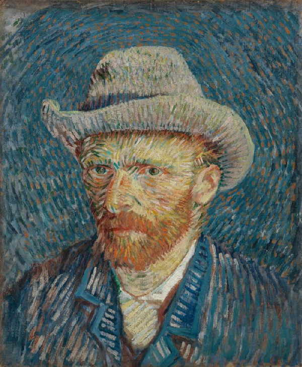
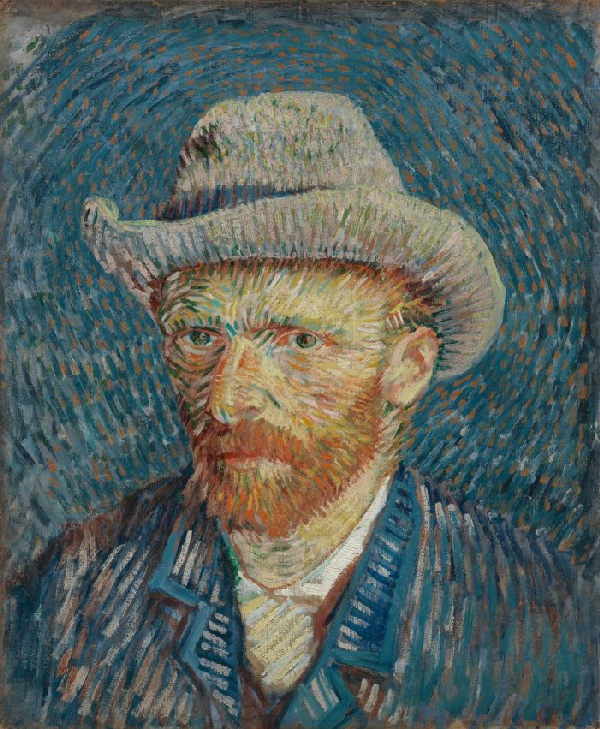

Van Gogh
Scroll Down


The Van Gogh Museum
The Van Gogh Museum in Amsterdam is dedicated to the works of Vincent van Gogh, one of the most
famous and influential figures in the history of Western art. Opened to the public in 1973, the
museum houses the largest collection of Van Gogh's paintings and drawings in the world, offering an
unparalleled insight into the artist’s life and work. The collection includes over 200 paintings,
500 drawings, and more than 750 letters, providing a comprehensive overview of his artistic journey
and development.
Located in the Museum Square in Amsterdam, the museum consists of two buildings: the Rietveld
building, designed by Gerrit Rietveld and opened in 1973, which houses the permanent collection, and
the Kurokawa wing, designed by Kisho Kurokawa and added in 1999, which is used for temporary
exhibitions. The museum's architecture is a notable aspect of its appeal, blending modernist and
contemporary design elements that complement Van Gogh’s art.
The Van Gogh Museum’s collection spans the entirety of the artist’s career, from his early works in
the Netherlands to the vibrant paintings he produced in France. Highlights include iconic pieces
such as "Sunflowers," "The Bedroom," and "Almond Blossoms." The museum not only showcases Van Gogh’s
paintings but also offers insight into his influences and the artists he influenced, providing
context to his place within the Post-Impressionist movement and the broader narrative of art
history.
In addition to the permanent collection, the museum hosts temporary exhibitions that explore various
aspects of 19th-century art history, including the work of Van Gogh’s contemporaries, his sources of
inspiration, and his impact on subsequent generations of artists. The museum also engages in
extensive research on Van Gogh's techniques, conservation efforts, and the provenance of his works,
contributing significantly to the academic study of his life and art.
The Van Gogh Museum is not just a destination for art enthusiasts but also serves as an educational
resource, offering programs and materials for visitors of all ages. It plays a pivotal role in
making art accessible to a wide audience, inviting visitors to delve into the emotional depth and
artistic brilliance of Van Gogh’s work. The museum's dedication to preserving and sharing Van Gogh’s
legacy makes it a vital institution in the cultural landscape of Amsterdam and the art world at
large.
Collections


 


Amsterdam
Valiant, Steadfast, Compassionate

Amsterdam, the capital city of the Netherlands, is one of Europe's most picturesque and vibrant
capitals, known for its historic canals, narrow houses with gabled facades, rich artistic heritage, and
liberal cultural atmosphere. Founded as a small fishing village in the late 12th century, Amsterdam
became one of the most important ports in the world during the Dutch Golden Age of the 17th century,
partly due to its innovative developments in trade. This period marked the city's golden era, during
which it became a hub for finance and diamonds, as well as a cradle for art and culture.
Amsterdam's urban layout is characterized by its extensive canal system that was innovatively planned in
the 17th century to facilitate trade and improve water management, earning it the nickname "Venice of
the North." These canals, together with the city’s more than 1,500 bridges, create a unique and
aesthetically pleasing urban environment that is both historic and dynamic. The city center is a UNESCO
World Heritage Site, recognized for its well-preserved architecture and the urban plan that reflects the
socio-economic, historical, and artistic movements through the centuries.
The city is also famous for its museums, including the Van Gogh Museum, the Rijksmuseum, and the Anne
Frank House, which draw millions of international visitors each year. These institutions house some of
the world’s most important art and historical artifacts, offering deep insights into both Dutch and
global history.
Amsterdam is known for its open-minded culture and has been a center of liberal policies that have
attracted a diverse and vibrant community. Its progressive approaches to issues such as LGBTQ+ rights,
cannabis consumption, and prostitution are well-known, making it a city that prides itself on tolerance
and diversity.
Economically and culturally, Amsterdam continues to play a significant role on the international stage.
It is not only a major tourist destination but also a hub for innovation in sectors like technology,
finance, and creative industries. The city’s universities and research institutions contribute to its
status as a knowledge and innovation center, fostering a dynamic and forward-thinking community.
Despite its global influence, Amsterdam retains a quaint charm, with its bicycle-friendly streets,
bustling marketplaces, and cozy cafés and bars. The city's blend of historical heritage and contemporary
culture, combined with its social tolerance and progressive policies, makes it a unique place that
attracts people from all over the world, whether they come as tourists, students, or professionals
seeking opportunities in this dynamic metropolis.